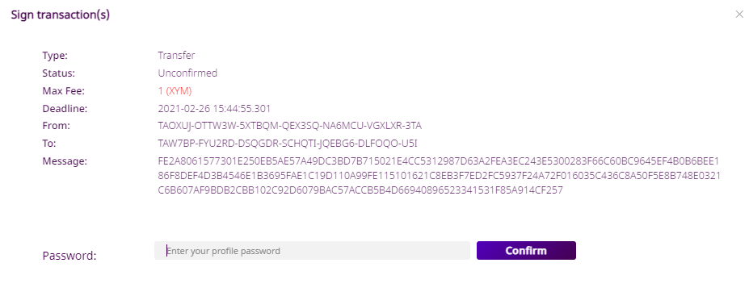
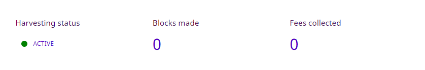

Share your account’s importance securely with a node and get rewarded.
Delegated harvesting enables accounts to receive rewards from creating new blocks without running a node. At the same time, it allows nodes to benefit from an account’s (possibly higher) importance score.
Note
Node owners have access to the node’s configuration so it’s more convenient for them to use Remote harvesting instead.
As explained in the manual version of this guide there are a number of steps required to enable delegated harvesting, involving different accounts and several transactions. It is thus much more convenient to use Symbol’s Desktop Wallet as shown in this guide.
The process requires little more than selecting the desired node and sending a harvesting request.
Before you can activate delegated harvesting using the Desktop Wallet, you need the following items:
symbol.xym to be eligible and then some more to pay for transaction fees.Select the Harvesting option in the menu on the left. You should see the Harvesting screen:

Note that the Harvesting status is üî¥ INACTIVE.
Click on the “Node Url” box to see a list of nodes currently connected to the network:

Note
Only nodes which act both as Peer and API nodes are shown on this list, but you can still request harvesting from pure Peer nodes by manually writing their URL in the box. In this case, though, you will also need to provide the node’s transport public key.
This key must be provided by the node owner. If you have instantiated the node using Symbol Bootstrap, you can find this key in the addresses.yml file.
A node URL looks like:
http://ngl-dual-101.testnet.symboldev.network:3000
Select a node from the list and click on the “Link all keys” button (You will probably need to scroll down past the “Keys Info” section).
You will be asked to sign an Aggregate Transaction:
This aggregate transaction registers 3 different keys to your account which are needed for harvesting.
Enter your password and click “Confirm”.
The Desktop Wallet will then sign the transaction and announce it to the network. After a little while (shouldn’t take longer than 30 seconds), the screen should update:

You can see that the Harvesting status has changed to üü° KEYS LINKED and the different keys appear in the form.
All that is left now is to send a PersistentDelegationRequest transaction which is the actual request to the node.
Click on the “Activate” button.
Your password is needed again to encrypt the persistent delegation message sent to the node:

Enter your password and click “Confirm”.
Your password is needed one last time to sign and announce the persistent delegation request (which is a special type of transfer transaction):
Enter your password and click “Confirm” (again).
Once you receive the confirmation message (shouldn‚Äôt take longer than 30 seconds), the Harvesting status should change to üü° ACTIVATION IN PROGRESS:
At this point it is up to the node to accept the request and add your account as a harvester. When this happens, the Harvesting status will change to üü¢ ACTIVE:
Delegated harvesting is now enabled and you should start collecting fees, at a rate proportional to your node’s importance score (See the Final words section below for some remarks).
Note
When requesting delegation through a PersistentDelegationRequest transaction instead of directly configuring the node, whether the node enables delegated harvesting depends entirely on the node and not on the network. It is entirely up to the node to comply with the request or even to lie about its state and provide a misleading Harvesting status indicator.
Therefore, there is no reliable way to know if your account has become a harvester or not besides waiting to see if your account starts receiving harvesting fees.
You can find more details about this process in the manual version of this guide.
The Harvesting status indicator can help you find out the state of your account’s delegated harvesting:
| Status | Meaning |
|---|---|
| üî¥ INACTIVE | Some keys are missing. Go to step 2. |
| üü° KEYS LINKED | Keys are present but the harvesting delegation request has not been sent. Go to step 5. |
| üü° IN PROGRESS | The harvesting delegation request has been sent but the node has not acknowledged it yet. It might take a few minutes, or it might never happen. There is not much you can do at this point, except trying a different node. |
| üü¢ ACTIVE | Harvesting is enabled. Harvested blocks and their fees should start arriving, depending on your account‚Äôs importance. |
importanceGrouping property in the Configuring network properties guide.
{kind=link}
{kind=link}
{kind=link}
{kind=link}